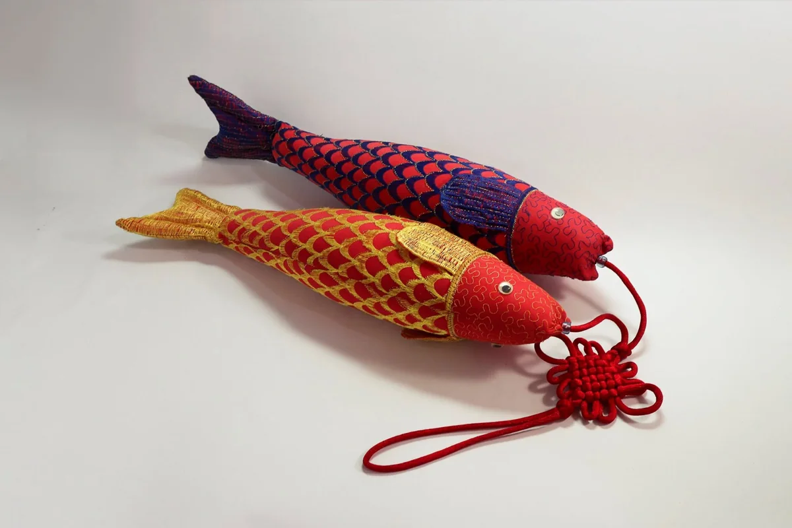

Handmade, by the people who stayed
Volunteering in Luer taught me what visitors and residents needed from the materials I was designing.
- Partner
- Luer Community Development Association
- My role
- Marketing design
- Team
- 4 people
- Scope
- Craft market flyers · Local tours

A town of elders
In Luer, a coastal community in Tainan, most young people had moved to the city for work. The ones who stayed were mostly elders, keeping the community going with handmade crafts and a lot of quiet determination.
I joined the Luer Community Development Association as a volunteer. It was my first time stepping into community work, and I thought I was there to design.
I came to make flyers. I left knowing the names of the people I was designing for.What volunteering taught me
Everything a community needs
Design turned out to be only one part of it. A small community needs many hands, so I helped wherever I could:
- Designing flyers and a simple look for the elders’ craft market stall
- Planning local tour routes that brought visitors to the people and places that make Luer special
- Delivering meals to elders who lived alone
- Guiding visitors and telling the community’s story in person
Design starts with people
Delivering meals and leading tours changed how I designed. I knew which colors felt like home to them and which words their customers would trust, because I had heard them talk about it over lunch.
That experience taught me to talk with people before deciding what to design.